| Task | Codex (GPT-5 CLI) | Claude Code | Darts |
|---|---|---|---|
| Rental / Real Estate Management 03-rental-management | 7.7 | 7.7 | 7.3 |
| Average | 7.70 | 7.70 | 7.30 |
| Axis | Weight | Codex (GPT-5 CLI) | Claude Code | Darts |
|---|---|---|---|---|
| Functional correctness | 50% | 7.90 | 7.30 | 6.80 |
| Code quality | 10% | 7.10 | 7.10 | 7.10 |
| Spec understanding | 10% | 9.30 | 9.30 | 8.00 |
| Production readiness | 20% | 6.60 | 8.20 | 8.20 |
Each axis is scored deterministically by max-scaling the per-criterion levels: 10 × Σ(weight × level) ÷ Σ(weight × 4). The overall score is a weighted blend — Functional correctness (50%), Code quality (10%), Spec understanding (10%) and, where a task defines it, Production readiness (20%) — normalized over the axes a task was actually graded on.
Real-estate rental: projects, properties, lease contracts, recurring billing, signatory locking, termination.
Click any criterion to expand — each agent’s council verdict, individual grader votes, reasoning, and evidence (screenshots, OData queries, code).
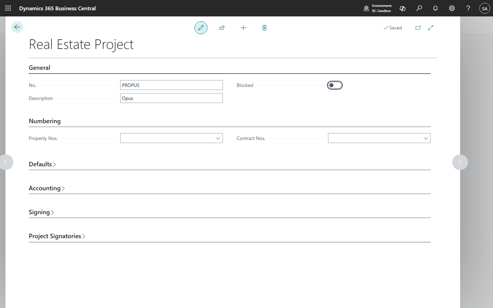
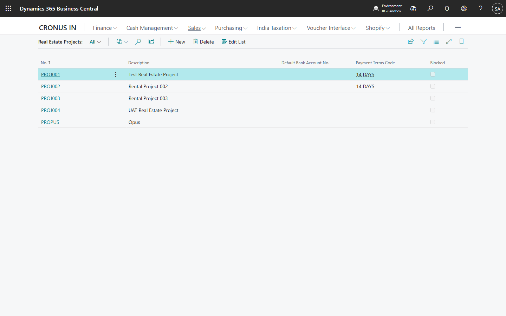
table 50000 "RE Project"
fields { field(1; "No."; Code[20]); field(3; "Property Nos."; Code[20]) { TableRelation = "No. Series"; } field(4; "Contract Nos."); field(5; "Default Bank Account No."); field(6; "Payment Terms Code"); field(7; "Payment Method Code"); ... }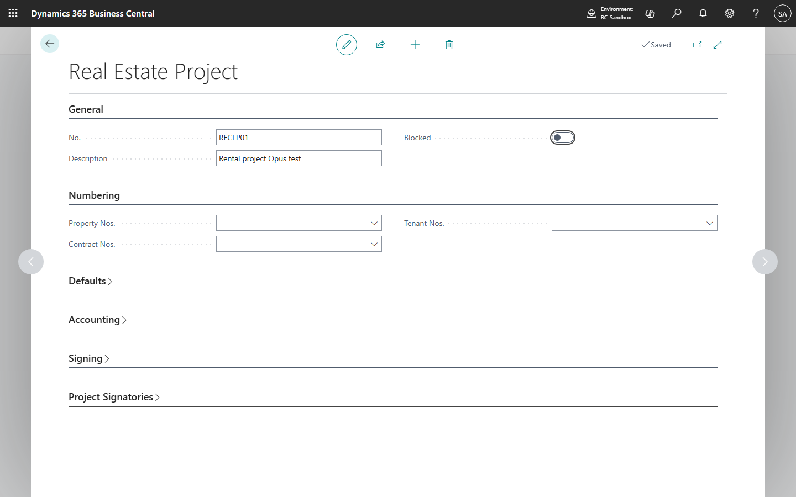
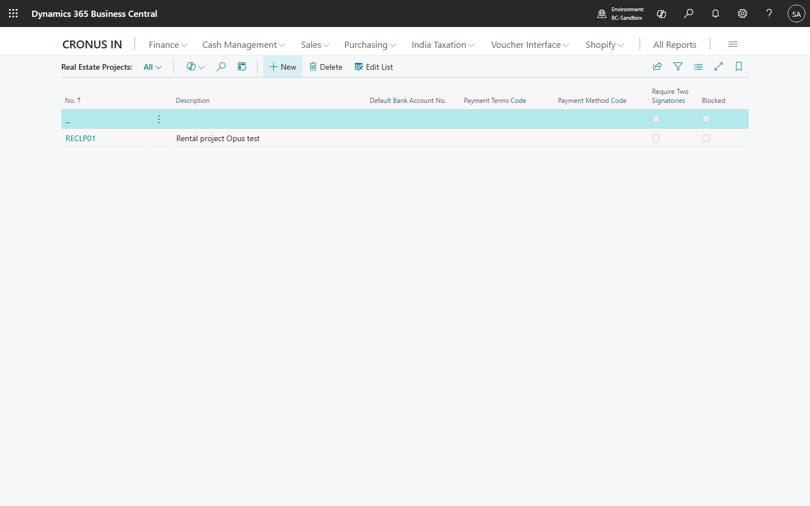
table 50000 "RE Project" ... field(3; "Property Nos."; Code[20]) { TableRelation = "No. Series"; } field(4; "Contract Nos."; ...); field(5; "Tenant Nos."; ...); field(6; "Default Bank Account No."; ...); field(7; "Payment Terms Code"; ...)page 50001 "RE Project Card" with Numbering / Defaults / Accounting / Signing groups and Signatories listpart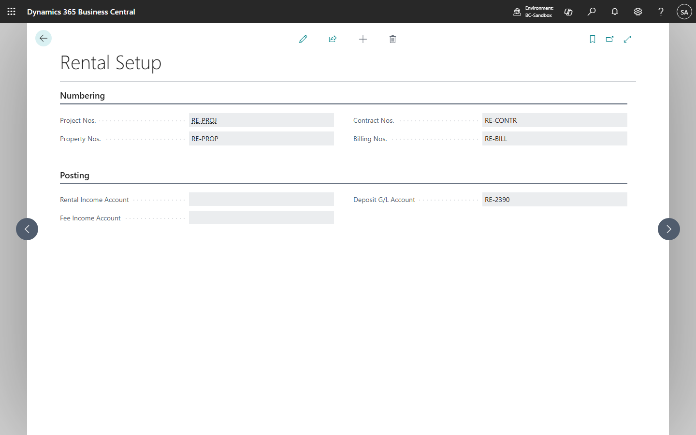
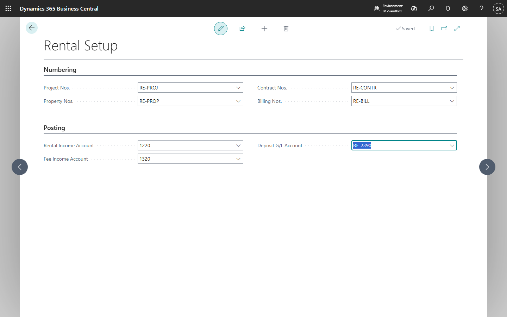
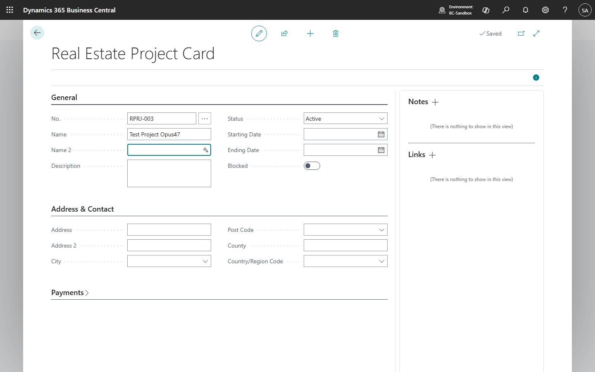
field(1; "No."; Code[20]) ... field(20; "Bank Account Code") ... field(21; "Payment Method Code") ... field(22; "Payment Terms Code") ... field(30; "No. Series")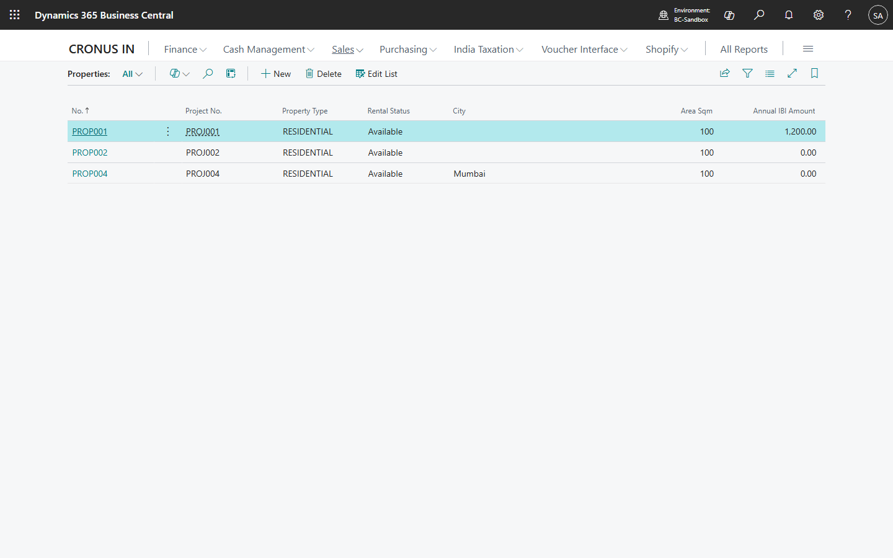
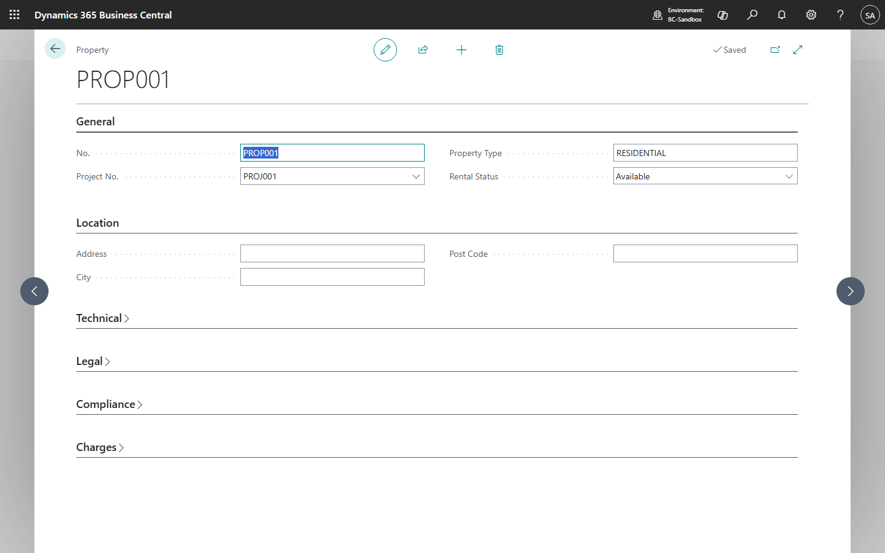
table 50003 "RE Property"
field(1; "No."); field(2; "Project No."); field(3; "Property Type"); field(4; "Rental Status"; Enum "RE Rental Status"); field(5; Address); field(8; "Area Sqm"); field(9; "Technical Specs"); field(10; "Registry No."); field(11; "Cadastral Reference"); field(13; "Energy Rating"); field(14; "Energy Certificate No.")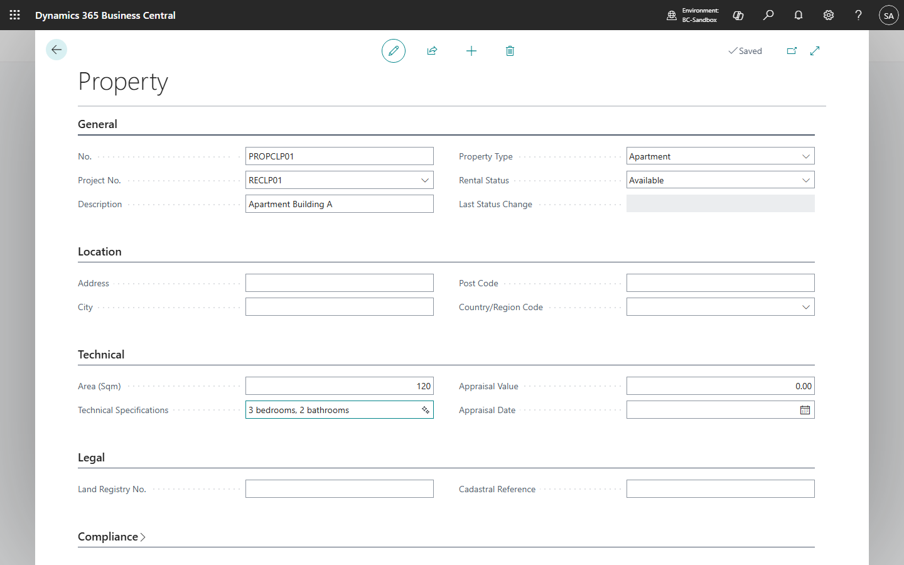
table 50003 "RE Property" — fields: No., Project No., Property Type, Rental Status, Address/City/PostCode/Country, Area Sqm, Technical Specs, Registry No., Cadastral Reference, Appraisal Value/Date, Energy Rating/Certificate/Expiry, Annual IBI, Available Sublease Area, Last Status Change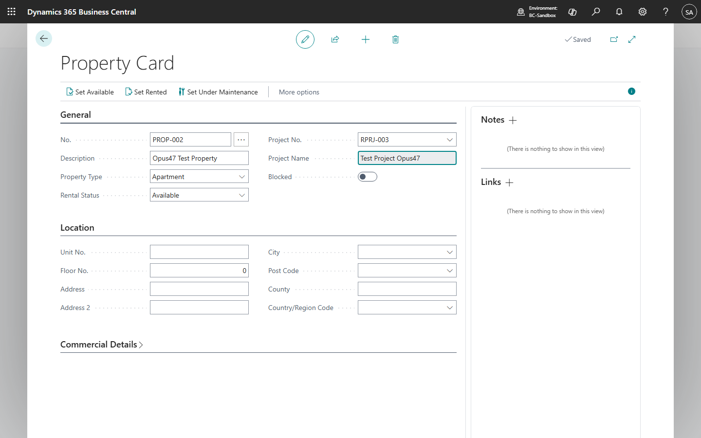
fields { field(1;"No.") field(3;"Property Type") field(4;"Rental Status") field(5;"Project No.") field(20;"Floor Area (sqm)") field(21;"Floor No.") field(22;"Unit No.") field(30;"Monthly Rent") } // NO registry/legal data, NO energy certification fields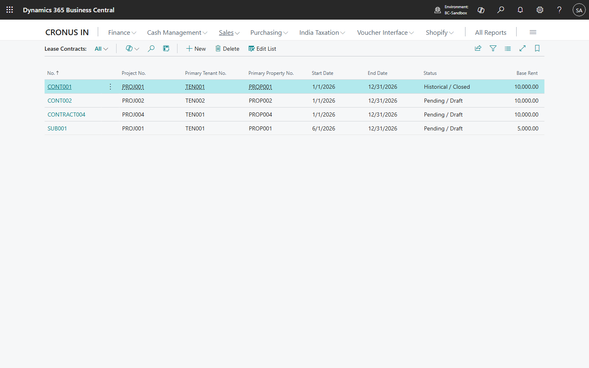
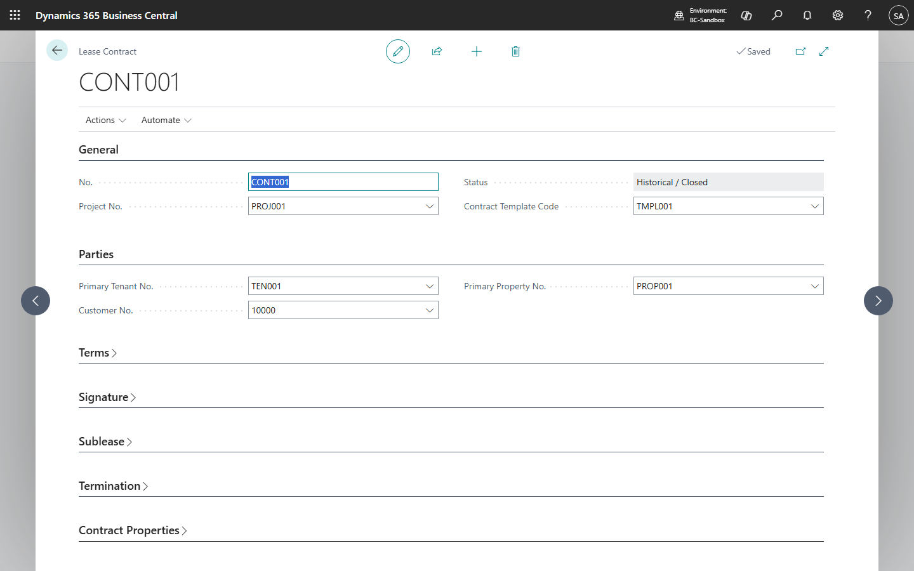
table 50005 "RE Contract"
field(2; "Project No."); field(3; "Primary Tenant No."); field(4; "Primary Property No."); field(5; "Start Date"); field(6; "End Date"); field(7; Status; Enum "RE Contract Status"); field(8; "Base Rent"); field(9; "Deposit Amount"); field(13; "Contract Template Code")table 50005 "RE Contract" — fields: No., Project No., Primary Tenant No., Primary Property No., Start/End Date, Status (init=Draft), Base Rent, Deposit Amount, Holding Type, Payment Terms/Method, Contract Template, Signatory 1/2, Parent Contract / Is Sublease, etc.table 50006 "RE Contract Property" (multi-property line) + table 50007 "RE Contract Tenant" (multi-tenant line) with key by Contract No., Line No.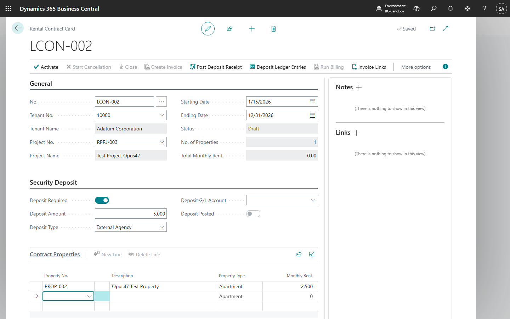
field(2;"Tenant No.";Code[20]){TableRelation=Customer} field(4;"Project No.") field(6;"Starting Date") field(7;"Ending Date") field(10;Status;Enum) field(50;"Deposit Required") field(51;"Deposit Amount")field(1;"Contract No.") field(3;"Property No.";Code[20]){TableRelation=Property} field(6;"Monthly Rent")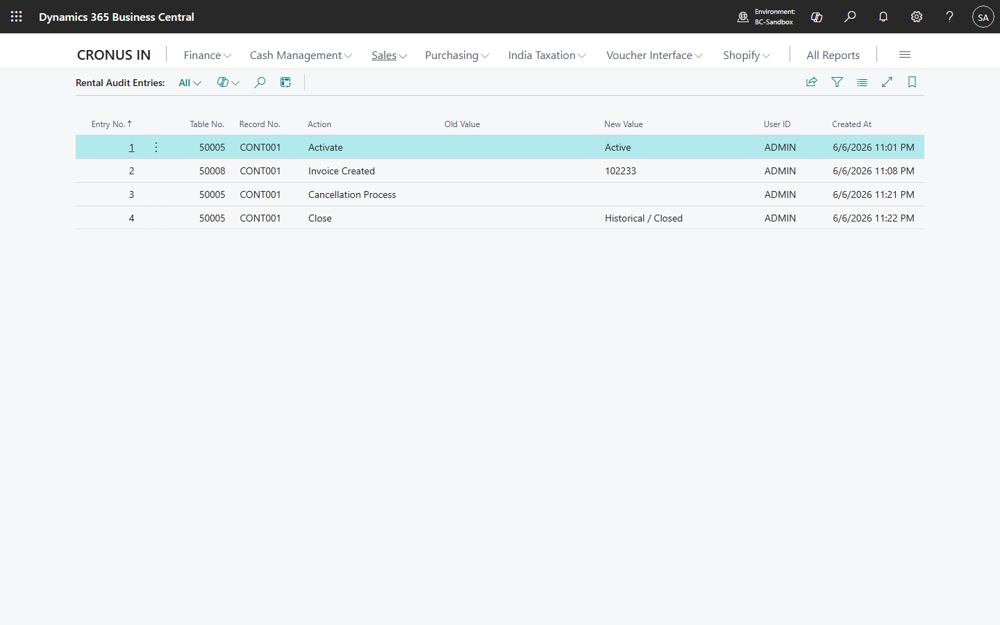
procedure ActivateContract(var Contract: Record "RE Contract")
ValidateContractReady(Contract);
PreventOverlappingAllocation(Contract);
ValidateSublease(Contract);
Contract.Status := Contract.Status::Active;
Contract.Signed := true;
... Property."Rental Status" := Property."Rental Status"::Leased;ActivateContract: ValidateContractReady(...); PreventOverlappingAllocation(...); Contract.Status := Contract.Status::Active; Contract.Signed := true; if Property.Get(...) then Property."Rental Status" := ::Leased; Property.Modify(true);ValidateContractReady — TestField Project/Property/Tenant/Dates/Rent/Template; checks template Active, RequiresLegalReview, Mandatory Clauses Confirmed; verifies Signatory 1 (and 2 if project requires two) is registered.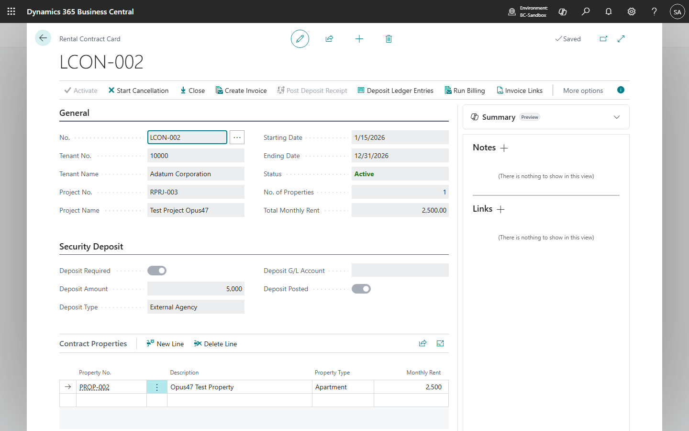
if RentalContract.Status<>RentalContract.Status::Draft then Error(InvalidStatusErr,...); if RentalContract."Tenant No."='' then Error(NoTenantErr,...); if RentalContractLine.IsEmpty() then Error(NoPropertiesErr,...); ... Property."Rental Status":=Property."Rental Status"::Rented; Property.Modify(true); ... RentalContract.Status:=RentalContract.Status::Active; RentalContract.Modify(true);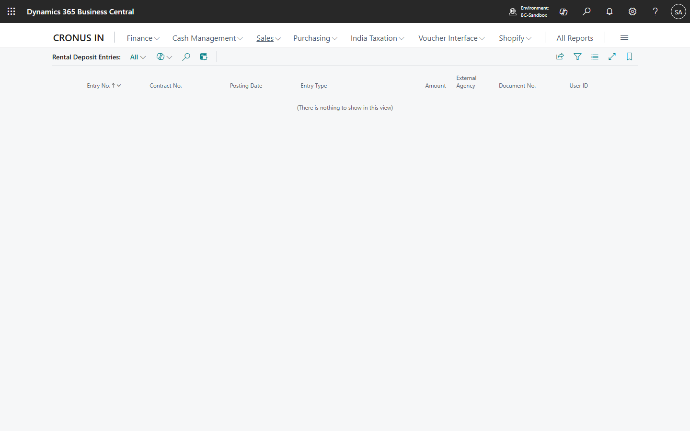
procedure PostInitialDeposit(var Contract: Record "RE Contract"; DocumentNo: Code[20])
begin
Contract.TestField(Status, Contract.Status::Active);
Contract.TestField("Deposit Amount");
CreateDepositEntry(Contract, Enum::"RE Deposit Entry Type"::Initial, Contract."Deposit Amount", DocumentNo);
end;local procedure CreateDepositEntry(...)
begin
DepositEntry.Init(); DepositEntry."Contract No." := Contract."No."; DepositEntry.Amount := Amount; DepositEntry.Insert(true);
// No GenJnlPostLine / GenJnlLine — writes to custom "RE Deposit Entry" onlyPostInitialDeposit: ... CreateDepositEntry(Contract, ::Initial, Contract."Deposit Amount", DocumentNo, Project."Deposit G/L Account No.", 'Initial deposit');CreateDepositEntry — DepositEntry.Init(); ... DepositEntry."G/L Account No." := GLAccountNo; DepositEntry.Insert(true); — NO GenJnlPostLine, NO Sales Invoice. Writes directly to custom "RE Deposit Entry" ledger only.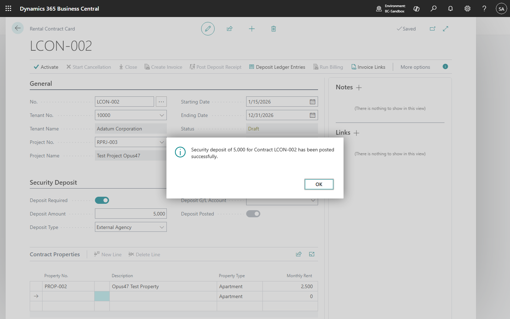
GenJnlLine."Account No.":=DepositAccountCode; GenJnlLine."Bal. Account Type":=GenJnlLine."Bal. Account Type"::Customer; GenJnlLine."Bal. Account No.":=RentalContract."Tenant No."; GenJnlLine.Amount:=RentalContract."Deposit Amount"; GenJnlPostLine.RunWithCheck(GenJnlLine); DepositLedgerEntry."Deposit Type":=RentalContract."Deposit Type"; ...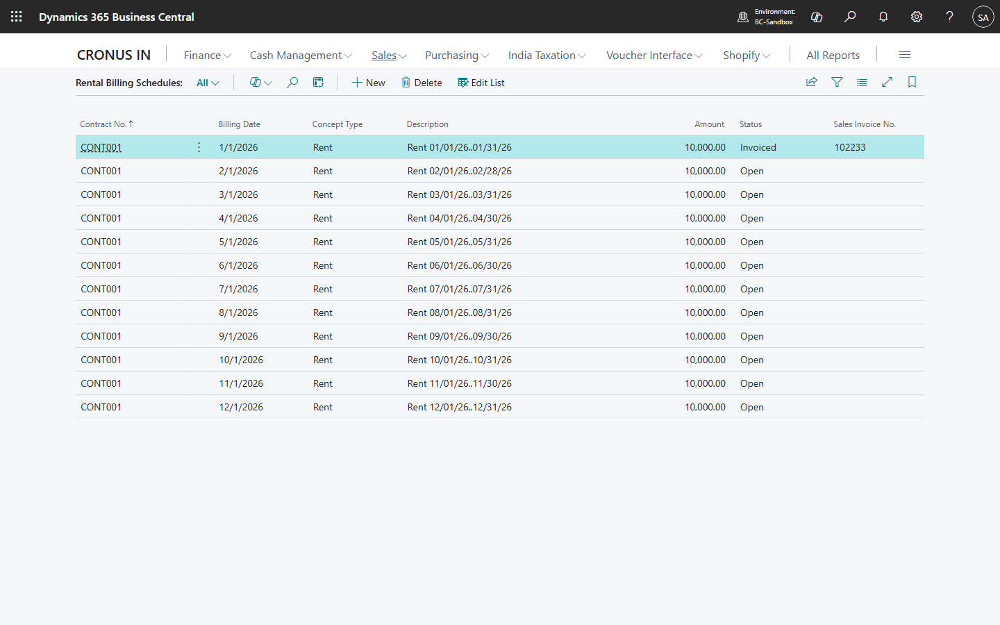
procedure GenerateMonthlySchedule(var Contract: Record "RE Contract"; FromDate: Date; ToDate: Date; Simulate: Boolean)
Contract.TestField(Status, Contract.Status::Active);
Contract.TestField("Base Rent");
... while PeriodStart <= ToDate do begin ... Billing."Concept Type" := Billing."Concept Type"::Rent; Billing.Amount := Contract."Base Rent"; Billing.Insert(true);GenerateBillingSchedule: Contract.TestField(Status,::Active); ... PeriodStart := CalcDate('<-CM>', FromDate); while PeriodStart <= ToDate do begin ... InsertScheduleLine(...,::Rent, ..., Contract."Base Rent" * Frequency, Simulate); PeriodStart := CalcDate(FrequencyTok, PeriodStart);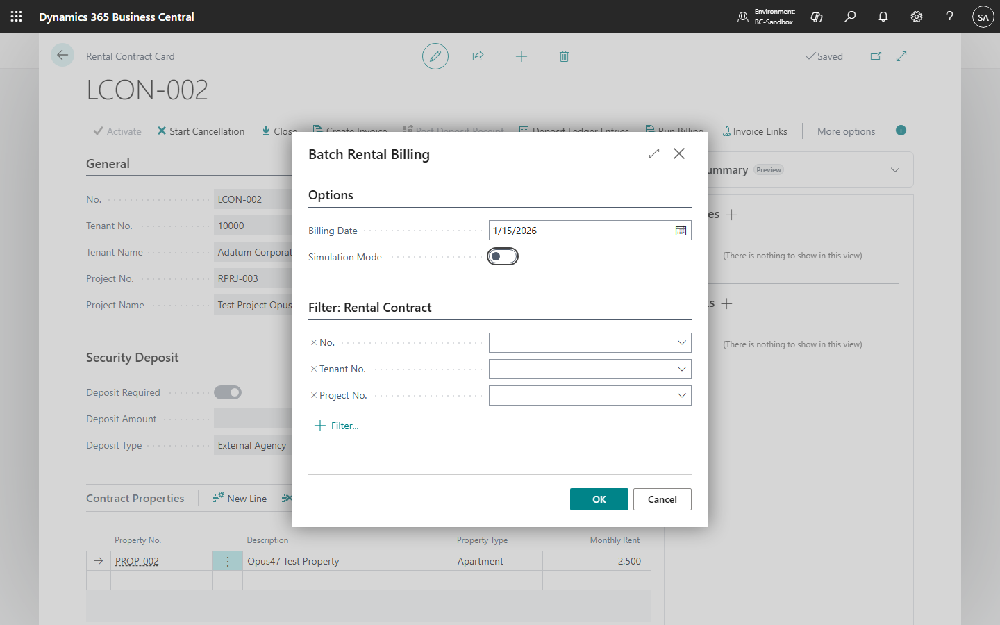
PeriodStart := CalcDate('<-CM>', BillingDate); // first day of month
PeriodEnd := CalcDate('<CM>', BillingDate); // last day of month
// engine processes ONE current-month period only — no schedule covering contract dates is generatedvalue(0;"Base Rent") value(1;Fee) // only 2 concept types — no Tax/IBI, no one-time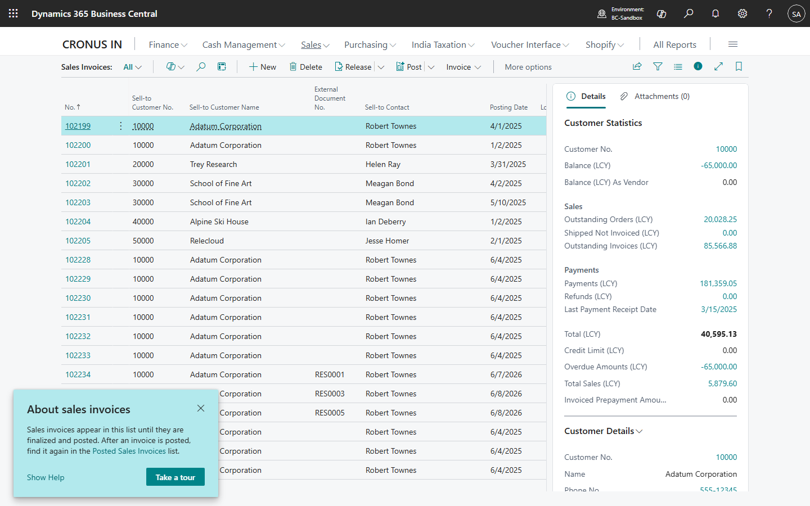
SalesHeader.Init(); SalesHeader.Validate("Document Type", SalesHeader."Document Type"::Invoice);
SalesHeader.Insert(true);
... SalesLine.Insert(true);
Billing.Status := Billing.Status::Invoiced;
Billing."Sales Invoice No." := SalesHeader."No.";
// NO Codeunit "Sales-Post".Run(SalesHeader) — invoice never postsCreateSalesInvoiceForBilling: SalesHeader.Init(); SalesHeader.Validate("Document Type",::Invoice); SalesHeader.Insert(true); ... SalesLine.Insert(true); Billing.Status := ::Invoiced; Billing."Sales Invoice No." := SalesHeader."No."; — NO SalesPost.Run / Codeunit 80 / Codeunit 415 invocationInsertScheduleLine: ... if Simulate then Billing.Status := Billing.Status::Simulated else Billing.Status := Billing.Status::Open; Billing.Insert(true); — simulate path produces no posting (good)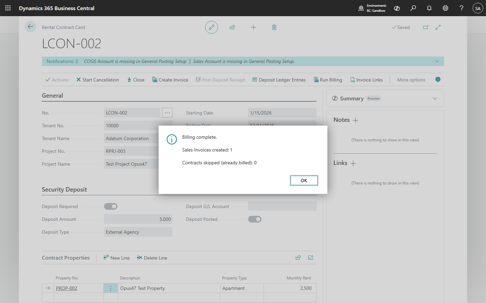
SalesHeader.Init(); SalesHeader."Document Type":=SalesHeader."Document Type"::Invoice; SalesHeader.Insert(true); SalesHeader.Validate("Sell-to Customer No.",...); ... SalesLine.Modify(true); ... RentalInvoiceLink.Insert(true); // NO SalesPost.Run(SalesHeader) — invoice is left in DRAFT(no results — SalesPost codeunit is never called anywhere)procedure UpdateIBIRecharge(var Contract; AnnualAmount; EffectiveDate)
Billing.SetRange("Contract No.", Contract."No."); Billing.SetRange("Concept Type", Billing."Concept Type"::TaxIBI); Billing.SetRange(Status, Billing.Status::Invoiced);
if Billing.FindSet() then repeat AlreadyBilled += Billing.Amount; until ...
CatchUpAmount := AnnualAmount - AlreadyBilled;
if CatchUpAmount > 0 then InsertOneTimeBilling(...,CatchUpAmount);UpdateIBIRecharge: ... Billing.SetRange("Concept Type",::TaxIBI); Billing.SetFilter(Status,'%1|%2',::Invoiced,::Open); Billing.SetFilter("Period Start",'%1..%2', DMY2Date(1,1,TaxYear), DMY2Date(31,12,TaxYear)); ... AlreadyBilled += Billing.Amount; CatchUpAmount := AnnualAmount - AlreadyBilled; if CatchUpAmount > 0 then InsertOneTimeBilling(Contract,::TaxIBI,EffectiveDate,EffectiveDate,'IBI catch-up '+TaxYear,CatchUpAmount);(no matches — no IBI/tax recharge logic present)value(0;"Base Rent") value(1;Fee) // no Tax/IBI concept typeprocedure ApplyRentUpdate(var Contract; NewRent; EffectiveDate; Method)
RentHistory.Init(); RentHistory."Old Rent" := OldRent; RentHistory."New Rent" := NewRent; RentHistory.Insert(true);
Contract."Base Rent" := NewRent; ...
procedure RenewContract(var Contract; NewEndDate)
if NewEndDate <= Contract."End Date" then Error('...');
Contract."End Date" := NewEndDate; Contract."Renewal Count" += 1;RenewContract: Contract.TestField(Status,::Active); if NewEndDate <= Contract."End Date" then Error(RenewalEndErr); OldEndDate := Contract."End Date"; Contract."End Date" := NewEndDate; Contract."Renewal Count" += 1; Contract.Modify(true); LogAudit(...);ApplyRentUpdate: ... RentHistory.Init(); RentHistory."Old Rent" := OldRent; RentHistory."New Rent" := NewRent; RentHistory.Insert(true); Contract."Base Rent" := NewRent; Contract."Last Rent Update Date" := EffectiveDate;(no matches — no renewal/extension/indexation workflow)actions { action(Activate) action(StartCancellation) action(CloseContract) action(CreateInvoice) action(PostDeposit) action(DepositEntries) action(RunBilling) action(InvoiceLinks) } // no Renew/Extend/UpdateRent actionlocal procedure ValidateSublease(Contract: Record "RE Contract")
begin
if not Contract."Is Sublease" then exit;
Contract.TestField("Parent Contract No.");
ParentContract.Get(Contract."Parent Contract No.");
if ParentContract."Is Sublease" then Error('Sub-subleasing is not allowed.');
... if Contract."Sublease Area Sqm" > Property."Available Sublease Area Sqm" then Error('Sublease area exceeds...');ValidateSublease: ... if ParentContract."Is Sublease" then Error(SubSubleaseErr); if (Contract."Start Date"<ParentContract."Start Date") or (Contract."End Date">ParentContract."End Date") then Error(SubleasePeriodErr); ... AvailableArea := Property."Available Sublease Area Sqm" - UsedArea; if Contract."Sublease Area Sqm" > AvailableArea then Error(SubleaseAreaErr,...);(no matches — sublease feature entirely missing)procedure StartCancellation(var Contract; TerminationDate; Reason)
Contract.TestField(Status, Contract.Status::Active);
Contract.Status := Contract.Status::"Cancellation Process";
procedure CloseContract(var Contract)
Contract.TestField(Status, Contract.Status::"Cancellation Process");
Contract.Status := Contract.Status::Closed;
if Property.Get(...) then Property."Rental Status" := Property."Rental Status"::Available;
// No final-billing trigger hereStartCancellation: Contract.TestField(Status,::Active); ... Contract.Status :=::"Cancellation Process"; ... CloseContract: Contract.TestField(Status,::"Cancellation Process"); Contract.Status :=::Closed; if Property.Get(Contract."Primary Property No.") then ReleaseProperty(Property); ContractProperty.SetRange("Contract No.",...); ... Property."Rental Status" :=::Available; Property.Modify(true);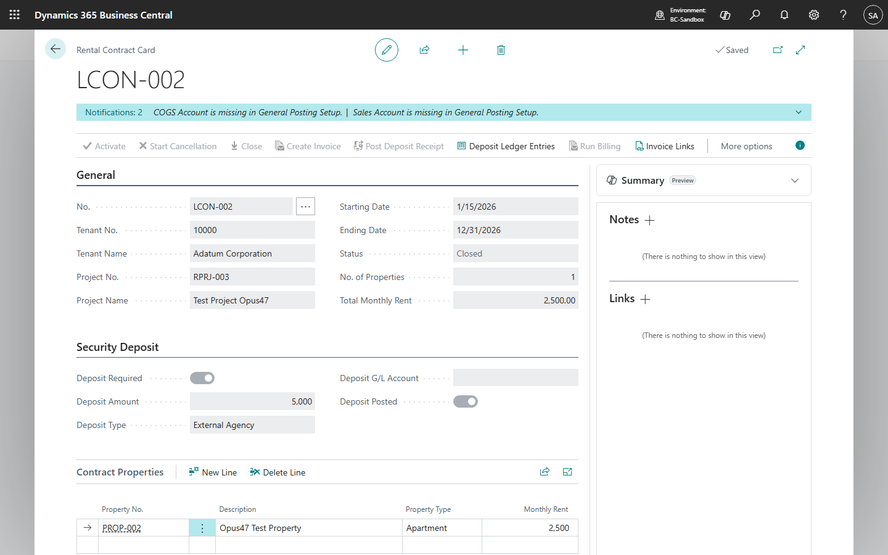
RentalContract.Status:=RentalContract.Status::Closed; RentalContract.Modify(true); UpdateLinesStatus(RentalContract); RentalContractLine.SetRange("Contract No.",...); ... if Property."Active Contract Count"=0 then begin Property."Rental Status":=Property."Rental Status"::Available; Property.Modify(true); end; // NO final billing callprocedure SettleDeposit(var Contract; SettlementAmount; RefundAmount; DocumentNo)
Contract.TestField(Status, Contract.Status::"Cancellation Process");
if Round(SettlementAmount + RefundAmount, 0.01) <> Round(Contract."Deposit Amount", 0.01) then Error('...');
if SettlementAmount <> 0 then CreateDepositEntry(Contract, Enum::"RE Deposit Entry Type"::Settlement, -SettlementAmount, DocumentNo);
if RefundAmount <> 0 then CreateDepositEntry(... Refund ...)SettleDeposit: Contract.TestField(Status,::"Cancellation Process"); ... if Round(SettlementAmount+RefundAmount,0.01) <> Round(Contract."Deposit Amount",0.01) then Error(DepositSettlementErr,...); if SettlementAmount>0 then CreateDepositEntry(Contract,::Settlement,-SettlementAmount,...); if RefundAmount>0 then CreateDepositEntry(Contract,::Refund,-RefundAmount,...);(no matches — only PostDepositReceipt exists)procedure PostDepositReceipt(...) // only DEPOSIT RECEIPT — no offsetting refund/settlement procedure"idRanges": [ { "from": 50000, "to": 50249 } ]All object IDs span 50000-50015 (enums 50000-50005, tables 50000-50012, codeunit 50000, pages 50000-50015, permissionset 50000) — within declared 50000-50249. All custom objects carry a consistent 'RE ' prefix.app.json idRanges 50000..50249; objects: table 50000-50012, enum 50000-50007, page 50000-50018, codeunit 50000, permissionset 50000 — all inside range; every object/field uses 'RE ' prefix consistently"idRanges":[{"from":50000,"to":50249}]all object IDs are 50100-50108 (tables), 50100-50110 (pages), 50100-50101 (codeunits), 50100-50107 (enums), 50100 (report) — all inside 50000-502490 ToolTip declarations across all page fields and actions (AS0011).0 — zero ToolTip declarations across 19 pages and ~140 page fields/actions (ratio 0.00 vs spec ≥0.80)143 ToolTip declarations across 12 page/report objects (148 field+action declarations → ≈97% coverage, well above 80%)table 50000 "RE Project" { DataClassification = CustomerContent; ... }
table 50004 "RE Tenant" { DataClassification = CustomerContent; ... }
field(9; "User ID"; Code[50]) { DataClassification = EndUserIdentifiableInformation; }Every table declares table-level DataClassification = CustomerContent; sensitive fields (User ID, E-Mail) override to EndUserIdentifiableInformation. 12 table-level + 5 explicit field-level overrides.122 DataClassification declarations vs 120 field declarations across 9 tables — every custom table field has an explicit DataClassification. User ID and Tenant Name are correctly EndUserIdentifiableInformation; the rest are CustomerContent. No ToBeClassified anywhere.0 matches — no standard-posting codeunit is invoked.SalesHeader.Insert(true); ... SalesLine.Insert(true);
Billing.Status := Billing.Status::Invoiced;
// (no Codeunit "Sales-Post".Run call)CreateDepositEntry writes to custom table 50009 "RE Deposit Entry" — never via Gen Journal Line.CreateSalesInvoiceForBilling — uses Sales Header / Sales Line API (SalesHeader.Validate / .Insert(true)) but NEVER calls Codeunit "Sales-Post" — the invoice is left UNPOSTED.CreateDepositEntry: ... DepositEntry.Insert(true); — deposit accounting is a custom RE Deposit Entry table, NOT routed through GenJnlPostLine.RunWithCheckGenJnlPostLine: Codeunit "Gen. Jnl.-Post Line"; ... GenJnlPostLine.RunWithCheck(GenJnlLine); // deposit posting goes through standard codeunit ✓SalesHeader.Insert(true); ... SalesLine.Modify(true); // creates DRAFT Sales Invoice only — never calls SalesPost.Run / Codeunit "Sales-Post"table 50105 "Deposit Ledger Entry" { field(1;"Entry No.";Integer){AutoIncrement=true} ... } // custom ledger table populated alongside standard GenJnl posting0 matches — no integration or business events published anywhere in the codeunit.no matches — zero IntegrationEvent or BusinessEvent publishers across all .al files(no matches — zero publishers)0 matches across all codeunits/pages.no matches — zero Session.LogMessage / FeatureTelemetry calls(no matches — zero telemetry)table 50012 "RE Audit Entry" { fields { "Table No.", "Record No.", Action, "Old Value", "New Value", "User ID", "Created At" } }
local procedure LogAudit(...) ... AuditEntry."User ID" := CopyStr(UserId(),...); AuditEntry."Created At" := CurrentDateTime(); AuditEntry.Insert(true);table 50012 "RE Audit Entry" — Entry No., Table No., Record No., Action, Field Name, Old Value, New Value, User ID, Created At, CommentLogAudit: AuditEntry.Init(); ... AuditEntry."User ID" := CopyStr(UserId(),1,...); AuditEntry."Created At" := CurrentDateTime(); AuditEntry.Insert(true); — called from Activate / StartCancellation / Close / Renewal / RentUpdate / IBI Update / EntryRightPosted / Mass Status Update / Deposit entriestable 50010 "RE Rent History" with Old Rent / New Rent / Effective Date / Update Method / Index Code / User ID — dedicated history of all rent changes(no matches — no change-log enablement, no dedicated history/audit table)field(11;"User ID";Code[50]){DataClassification=EndUserIdentifiableInformation} ... trigger OnInsert begin "User ID":=CopyStr(UserId(),1,...) endtable 50000 RE Project; table 50003 RE Property; table 50004 RE Tenant; table 50005 RE Contract; table 50006 RE Contract Property; table 50007 RE Contract Tenant; table 50008 RE Billing Schedule; table 50009 RE Deposit Entrytable 50000 "RE Project", table 50003 "RE Property", table 50005 "RE Contract", table 50007 "RE Contract Tenant" (link), table 50009 "RE Deposit Entry" — all spec-required masters/transactions present with their minimum fieldsTab50101 Real Estate Project, Tab50102 Property, Tab50103 Rental Contract (Tenant No.→Customer FK), Tab50104 Rental Contract Line (Contract↔Property), Tab50105 Deposit Ledger Entry — all spec-required entities present with their minimum fieldspermissionset 50000 "RE RENTAL MGT" { Assignable = true; Caption = 'Rental Management'; Permissions = tabledata "RE Project" = RIMD, ..., tabledata "RE Audit Entry" = RIMD; }permissionset 50000 "RE Rental Mgt" { Assignable = true; ... tabledata <every table> = RIMD, ... } — only ONE permission set, grants full RIMD on every table to every assignee(no matches — no permission set objects shipped)enum 50001 "RE Contract Status"
value(0; Draft) { Caption = 'Pending / Draft'; }
value(1; Active) { Caption = 'Active'; }
value(2; "Cancellation Process") { Caption = 'In Cancellation Process'; }
value(3; Closed) { Caption = 'Historical / Closed'; }enum 50001 "RE Contract Status" — value(0;Draft) Caption='Pending / Draft'; value(1;Active); value(2;"Cancellation Process") Caption='In Cancellation Process'; value(3;Closed) Caption='Historical / Closed';value(0;Draft) value(1;Active) value(2;"In Cancellation") value(3;Closed)field(17; "Available Sublease Area Sqm"; Decimal) on RE Property
field(19; "Parent Contract No."; Code[20]) { TableRelation = "RE Contract"; }
field(20; "Is Sublease"; Boolean)
ValidateSublease: if ParentContract."Is Sublease" then Error('Sub-subleasing is not allowed.'); if Contract."Sublease Area Sqm" > Property."Available Sublease Area Sqm" then Error(...);RE Contract field(20; "Parent Contract No."; TableRelation = "RE Contract"); field(21; "Is Sublease"; Boolean); field(22; "Sublease Area Sqm"; Decimal); + RE Property field(20; "Available Sublease Area Sqm"; Decimal)ValidateSublease — if ParentContract."Is Sublease" then Error(SubSubleaseErr); ... AvailableArea := Property."Available Sublease Area Sqm" - UsedArea; if Contract."Sublease Area Sqm" > AvailableArea then Error(SubleaseAreaErr,...);(no matches — sublease entirely unmodelled)enum 50002 "RE Holding Type" { value(0; Internal); value(1; ExternalAgency); }
field(10; "Deposit Holding Type"; Enum "RE Holding Type") on Contract
procedure TransferDepositToAgency(var Contract; DocumentNo) Contract.TestField("Deposit Holding Type", Contract."Deposit Holding Type"::ExternalAgency); CreateDepositEntry(Contract, ...Transfer, -Contract."Deposit Amount", DocumentNo);enum 50002 "RE Deposit Holding Type" { value(0; Internal) Caption='Internal Holding'; value(1; ExternalAgency) Caption='External Agency'; }TransferDepositToAgency: Contract.TestField("Deposit Holding Type",::ExternalAgency); ... CreateDepositEntry(Contract,::Transfer,-Contract."Deposit Amount",...);value(0;Internal) value(1;"External Agency")field(52;"Deposit Type";Enum "Deposit Type") field(53;"Deposit G/L Account";Code[20]){TableRelation="G/L Account"} field(54;"Deposit Posted";Boolean)enum 50003 "RE Billing Concept Type" { Rent; TaxIBI; Fee; Deposit; Settlement; }
local procedure InsertOneTimeBilling(Contract; ConceptType; PeriodStart; PeriodEnd; Description; Amount) — used by IBI catch-up and is reusable for entry rights / transfer feesenum 50003 "RE Billing Concept Type" — value(0;Rent); value(1;TaxIBI) Caption='Property Tax / IBI'; value(2;Fee); value(3;Deposit); value(4;OneTime) Caption='One-Time Charge'; value(5;Settlement);GenerateOneTimeBilling / PostEntryRightFee — insert one-time billing lines with anti-double-billing guard via BillingExistsvalue(0;"Base Rent") value(1;Fee) // ONLY 2 types — no Tax/IBI, no one-time concept(billing frequency enum exists)field(3;"Billing Type";Enum "Billing Concept Type") field(7;Amount) field(9;"Billing Frequency";Enum "Billing Frequency")All 13 tables + 6 enums + 1 codeunit + 16 pages + 1 permission set map to: Project setup, Property, Tenant, Contract (+ lines/tenants), Billing Schedule, Deposit Entry, Rent History, IBI Entry, Audit Entry, Contract Template, Project Signatory. No unrelated domain modules added.Enums.al, Pages.al, Permissions.al, RentalManagement.Codeunit.al, Tables.al — every object traces to project/property/contract/billing/tax/deposit/sublease/renewal/termination/accounting concerns; no unrelated domains31 objects: Rental Setup, Real Estate Project, Property, Rental Contract + Lines + Billing Concepts + Invoice Link, Deposit Ledger Entry, Rental Billing Engine, Batch Rental Billing — all within rental lifecycle scopeStartCancellation: Contract.TestField(Status, Status::Active);
CloseContract: TestField(Status, Status::"Cancellation Process");
GenerateMonthlySchedule: TestField(Status, Status::Active);
CreateSalesInvoiceForBilling: TestField(Status, Status::Active);
PostInitialDeposit: TestField(Status, Status::Active);
SettleDeposit: TestField(Status, Status::"Cancellation Process");
ApplyRentUpdate / RenewContract / UpdateIBIRecharge: TestField(Status, Status::Active);Every lifecycle/posting action starts with Contract.TestField(Status, Contract.Status::Active|Cancellation Process); RenewContract/GenerateBillingSchedule/PostEntryRightFee/PostInitialDeposit require Active; SettleDeposit requires Cancellation Process; CloseContract requires Cancellation Process; StartCancellation requires Active.if RentalContract.Status<>RentalContract.Status::Draft then Error(InvalidStatusErr,...); // Activate guard ... if RentalContract.Status<>RentalContract.Status::Active then Error(InvalidStatusErr,...); // CancelContract guard ... if (Status<>Active) and (Status<>"In Cancellation") then Error(InvalidStatusErr,...); // CloseContract guardCanActivate:=Rec.Status=Rec.Status::Draft; CanCancel:=Rec.Status=Rec.Status::Active; CanClose:=(Status=Active) or (Status="In Cancellation"); CanPostDeposit:=(Status=Draft) and "Deposit Required" and not "Deposit Posted"; // UI also guards via Enabledlocal procedure ValidateContractReady(Contract)
Contract.TestField("Project No."); Contract.TestField("Primary Property No."); Contract.TestField("Primary Tenant No."); Contract.TestField("Start Date"); Contract.TestField("End Date"); Contract.TestField("Base Rent"); Contract.TestField("Contract Template Code");
... Tenant.TestField("Customer No."); Contract.TestField("Signatory 1 Code"); if Project."Require Two Signatories" then Contract.TestField("Signatory 2 Code");ValidateContractReady — Contract.TestField("Project No."); TestField("Primary Property No."); TestField("Primary Tenant No."); TestField("Start Date"); TestField("End Date"); TestField("Base Rent"); TestField("Contract Template Code"); Tenant.TestField("Customer No."); — invoice path Billing.TestField(Status,::Open) + GenerateBillingSchedule TestField(Base Rent)if RentalContract."Tenant No."='' then Error(NoTenantErr,...); if (StartingDate=0D) or (EndingDate=0D) then Error(NoDatesErr,...); if RentalContractLine.IsEmpty() then Error(NoPropertiesErr,...); if "Deposit Required" and not "Deposit Posted" then Error(DepositNotPostedErr,...);RentalContract.TestField(Status,Status::Draft); if not "Deposit Required" then Error(NoDepositRequiredErr,...); if "Deposit Amount"<=0 then Error(NoDepositAmountErr,...); if "Tenant No."=''then Error(NoTenantErr,...); if "Deposit Posted" then Error(AlreadyPostedErr,...);SalesHeader.Insert(true); SalesLine.Insert(true); Billing.Status := Billing.Status::Invoiced; // NO SalesPost.Run
CreateDepositEntry writes only to custom "RE Deposit Entry" — not Gen Journal LineSalesHeader.Insert(true); ... SalesLine.Insert(true); Billing.Status:=::Invoiced; — never calls Codeunit "Sales-Post", so no posted invoice / customer ledger / G/LCreateDepositEntry: ... DepositEntry.Insert(true); — direct inserts into custom RE Deposit Entry ledger, no GenJnlPostLineSalesHeader.Insert(true); ... SalesLine.Modify(true); // NO SalesPost.Run / Codeunit "Sales-Post" — invoice never postsGenJnlPostLine: Codeunit "Gen. Jnl.-Post Line"; GenJnlPostLine.RunWithCheck(GenJnlLine); // deposit balanced via standard journal posting ✓Error('Settlement and refund must equal the contract deposit amount.');
Error('The renewal end date must be later than the current end date.');
Error('The contract end date cannot be before the start date.');
Error('Project %1 is blocked.', Project."No.");
Error('Legal review must be completed before activation.');
Error('Tenant %1 is blocked.', Tenant."No.");
Error('Property %1 is already allocated to contract %2 for an overlapping period.', ...);
Error('Sub-subleasing is not allowed.');
Error('Sublease area exceeds the available sublease area for property %1.', Property."No.");
Error('A billing schedule already exists for contract %1, concept %2, period %3..%4.', ...);local procedure CheckEditableCriticalField(FieldName: Text) ... Error('%1 cannot be changed after signature or activation.', FieldName);OverlapErr 'Property %1 is already allocated to contract %2 for an overlapping period (%3..%4).'; DoubleBillingErr 'A billing schedule already exists for contract %1, concept %2, period %3..%4.'; SubSubleaseErr 'Sub-subleasing is not allowed...'; SubleaseAreaErr 'Sublease area (%1) exceeds the available sublease area (%2) for property %3.'; DepositSettlementErr 'Settlement (%1) plus refund (%2) must equal the contract deposit amount (%3).' — etc, all named labels with placeholdersNoTenantErr: Label 'You cannot activate Rental Contract %1 because no Tenant has been specified.'; NoPropertiesErr: Label '...because no Properties have been linked. Please add at least one property line.'; DepositNotPostedErr: Label '...requires a security deposit. Please post the deposit receipt before activating.';OverlapErr: Label 'Property %1 is already covered by an Active contract (%2) for an overlapping period (%3 – %4). Remove the overlap before saving this line.'CheckEditableCriticalField blocks post-signature/post-activation edits of No., Project No., Tenant, Property, Dates, Base Rent, Deposit Amount.
PreventOverlappingAllocation iterates Active/Cancellation contracts on the same Primary Property and Errors on date overlap.
ValidateSublease: Error('Sub-subleasing is not allowed.') and Error('Sublease area exceeds...').
EnsureNotAlreadyScheduled blocks duplicate period rows for the same concept.
UpdateIBIRecharge subtracts AlreadyBilled before catch-up, preventing double IBI billing.PreventOverlappingAllocation — DatesOverlap with sibling Active/Cancellation contracts on same Primary Property → OverlapErrBillingExists guard — InsertScheduleLine/InsertOneTimeBilling cannot create a second non-cancelled billing line for the same contract/concept/periodRE Contract.CheckEditableCriticalField — if xRec.Signed or Status in [Active, Cancellation, Closed] then Error('%1 cannot be changed after the contract has been signed or activated.'); applied via OnValidate of every critical fieldValidateSublease — sub-sublease blocked, period inside parent, area within availableprocedure CheckOverlappingLeases ... Error(OverlapErr,...) // overbooking guard ✓procedure PeriodAlreadyBilled(...): Boolean ... exit(not RentalInvoiceLink.IsEmpty()) // billing-period dedup guard ✓procedure TestStatusIsDraft begin if Status<>Status::Draft then Error(MustBeDraftErr,"No.") end; // partial post-signature lock — fields read-only after Draft(none — sublease overflow, sub-sublease, IBI double-billing not guarded)field(3; "Property Nos."; Code[20]) { Caption = 'Property Nos.'; TableRelation = "No. Series"; }
field(4; "Contract Nos."; Code[20]) { Caption = 'Contract Nos.'; TableRelation = "No. Series"; }0 matches — no NoSeriesMgt usage anywhere; Property/Contract "No." is never auto-assigned from the configured series.RE Project field(3; "Property Nos."; TableRelation="No. Series"); field(4; "Contract Nos."; ...); field(5; "Tenant Nos."; ...); — series fields EXISTRE Contract OnInsert — Status := Status::Draft; if "Billing Frequency Months"=0 then "Billing Frequency Months":=1; — NO NoSeriesMgt.GetNextNo call, NO InitSeries; the No. is taken verbatim from user inputno matches — zero NoSeries usage anywherefield(10;"Project Nos."){TableRelation="No. Series"} field(11;"Property Nos."){TableRelation="No. Series"} field(12;"Contract Nos."){TableRelation="No. Series"} field(23;"Billing Nos."){TableRelation="No. Series"}NoSeriesMgt: Codeunit "No. Series"; ... "No.":=NoSeriesMgt.GetNextNo(RentalSetup."Project Nos.",WorkDate()); // No. Series Mgt for Project/Property/Contract — all configurable(no matches — no series codes hardcoded in the candidate's AL; the RPRJ-/PROP-/LCON- and RE-* codes shown in tests come from the harness seed app, not the candidate's source)Axis score = 10 × Σ(weight × level) ÷ Σ(weight × 4). Council level = mean of member votes, rounded. Total blends Functional 50% / Code quality 10% / Spec 10% / Production readiness 20%.
Real Business Central consultants verify in this order; the grader does too:
G_LEntries, Customer_Ledger_Entry, posted invoices.SalesPost.Run, NoSeriesMgt.GetNextNo); level 2 if implementation is a stub, fabricates posting, or reinvents BC built-ins; level 1 if it won’t build.Every task is graded by a council of 2–4 independent grader runs (Claude Opus 4.7 + GPT-5.5 ensemble). Second runs of each model are added on tasks where the first-run pair disagreed. The per-criterion level is the mean of member votes, rounded; the axis score is then computed deterministically by max-scaling those levels. Within-model variance is dampened by criterion-level averaging.
The overall score is a weighted blend of up to four axes. Each axis is scored deterministically by max-scaling its criteria’ 0–4 levels, then combined — normalized over the axes a task was actually graded on.